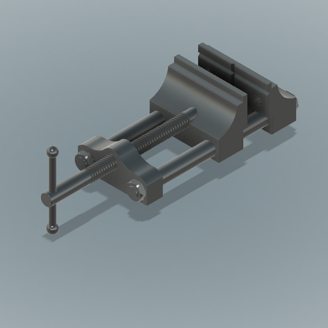
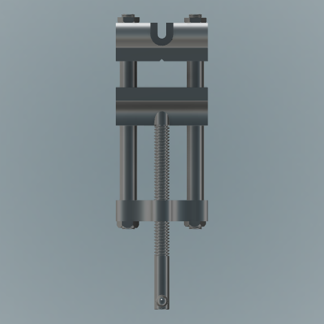
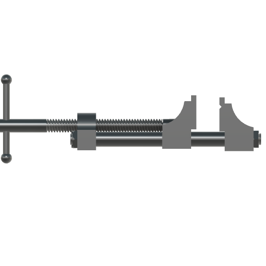

01
Drill Press Vice Model
Working from a full set of engineering design sheets, I modeled a drill press vice at true 1:1 scale in Fusion 360. It's built from more than 20 components, assembled with functioning motion joints, and I ran stress simulations afterward to see how it would hold up under real load. Accuracy was the hard part. With that many parts, small dimensional errors stacked up fast, and I ended up rebuilding several components from scratch once tolerances stopped lining up.


